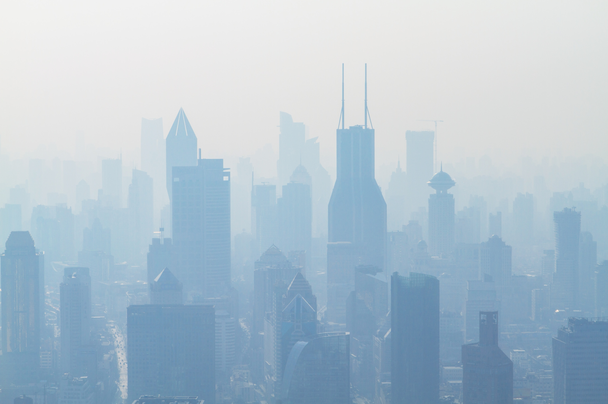

|  |
En este caso, nos hemos centrado en la problemática del CO2. Este compuesto es el que se genera en los procesos de combustión, muy frecuentes en el transporte, la industria, etc. Lo que ha llevado a unos niveles de CO2 en la atmófera demasiado altos y que provocan, además de la contaminación en el aire, el famoso calentamiento global. Por este motivo, es necesario tomar medidas para reducir drásticamente la cantidad de CO2 que se expulsa a la atmósfera y así poder volver a unos niveles seguros y saludables. En este sentido, ha sido un gran avance en los últimos años la implantación a nivel internacional del actual mercado de emisiones de CO2. Pero no solo es necesario reducir las emisiones, sino que también hay que tratar de compensar por todo el exceso de más que se ha estado emitiendo. Es decir, se debe aumentar la cantidad de sumideros naturales de CO2 (zonas verdes) e implantar tecnologías que capturen el CO2 y lo almacenen o reutilicen de forma segura y eficiente. |